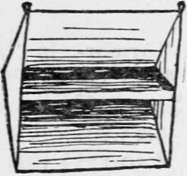
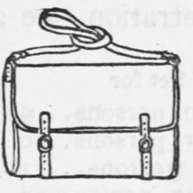

Other Tools Reqired In Camping. Continued
Description
This section is from the book "Camping And Woodcraft", by Horace Kephart. Also available from Amazon: Camping and Woodcraft.
Other Tools Reqired In Camping. Continued
On light marching trips no support for the utensils will be carried. Rocks or logs will take their place. There may be a little more spilling and swearing, but less tired backs.
It is commonly agreed that four is the ideal num^ ber for a Camping party, at least among hunters and fishermen. Certainly no larger number should attempt their own cooking. Utensils and table ware for such a party, going light, should include: a large frying-pan (more serviceable than two small ones) ; a pan to mix dough in and wash dishes (common milk pan) ; a stout, seamless, covered pot for boiling or stewing meat, baking beans, etc.; a medium pot or pail for hot water (always wanted, substitute for tea kettle) ; a smaller one for cereals, vegetables, fruit; and either a coffee pot low enough to nest in the latter, or a covered pail in its place.
There should be six plates (two for serving) and four each of cups, knives, forks, teaspoons, tablespoons. This is about as little as the party can well get along with.
It will be bothersome to bake bread for four in the frying-pan. Add a reflector or a sheet-steel oven, if practicable. A wire broiler, a tea percolator, and a corkscrew and can opener will nest with this set. If the cook wears no sheath knife a butcher knife is essential. Several dish towels (some to be divided into clouts) and a couple of yards of cheesecloth for straining and to hang meat in should be taken. Sapolio will be needed, or Bon Ami if the utensils are of aluminum.
The common utensils of the shops will not nest. They are all spouts and handles, bail ears and cover knobs. Still, a good deal can be done by substitution. Covered pails or pots (Fig. 70) do the work of sauce pans and kettles, and are better all round, for they can either be set upon the coals or hung above the fire; besides, you can carry water in them, and their covers keep heat in and ashes out. All such vessels should be low and broad; then they will boil quickly and pack well. Good proportions are:
Fig. 70. Cooking Pot.
Fig. 71. Pot Chain.
Fig. 72. Coffee Pot.
Fig. 73. Miner's Coffee Pot.
.
Bail ears should project as little as possible. Lids should have fold-down rings instead of knobs, so they will nest well.
A set of pot-chains with hooks (Fig, 74) is worth taking. With one of these (weight 2 oz.) a kettle can be suspended at any desired height above the fire.
Ordinary coffee pots are not suitable for Camping. A good pattern for the purpose is shown in Fig. 72. It has a bail, folding handles, and a solid spout that cannot melt off. A cheaper but very good article in tin (Fig. 73) is known as a "miner's coffee pot." When very compact nesting is sought, discard the coffee pot for a lidded pail: it has the merit that no aroma escapes through a spout. For tea, have an aluminum tea-ball; then you will not commit the cardinal sin of steeping the leaves too long.
Cups, to nest inside the coffee pot, have the lowe' part of the handle free (Fig. 74). In tin, the 1 1/2 pint size is best (5 x 2 1/8 in.). Small cups and small plates are impertinences to anybody with a woods appetite. Tin is not so bad for coffee, but aluminum blisters the unwary mouth. Enamel is best for cups and plates, no matter what the material of the rest of the kit may be. It is so much easier to clean than tin or aluminum. If the plates are deep and generous (9 1/2-inch soup plates, nesting in the frying-pan) there will be no need of bowls for soup and porridge.
Fig. 74. Cup.
Fig. 75. Miller Frying Pan.
The frying-pan handle is a perennial problem. If detachable, it is likely to be lost. The best folding handled pan that I have used is the Miller pattern (Fig. 75). A common pan may be adapted by cutting off all but two inches of the handle and riveting a square socket to the top of the stub so that a stick may be fitted to it when you cook (if the socket is round the stick will twist unless carefully fitted). I prefer the folding handle, because it saves time, and, on the very few occasions when one needs a long stick for handle, he can insert it in the rings of the Miller handle. Get a pan with hinge that won't work loose.
Some sort of baker is almost essential for comfortable life in the woods. The most portable form is the folding reflector sold by most outfitters. It is similar to those that our great-grandmothers used to bake biscuit in, before a hearth fire. The top slants like a shed roof, and the bottom like another shed roof turned upside down, the bread pan being in the middle. The slanting top and bottom reflect heat downward upon the top of the baking and upward against its bottom, so that bread, for instance, bakes evenly all around.
A prime advantage of this cunning utensil is that baking can proceed immediately when the fire is kindled, without waiting for the wood to burn down to coals, and without danger of burning the dough. Fish, flesh, and fowl can be roasted to a turn in this contrivance. It has several better points than an oven, chief of which is its portability, as it folds flat; but it is inferior for corn bread, army bread, etc, and impossible for pot-roasts or braising. How to use it is shown in Chapter XVI.
Fig. 76. Reflector (Angular Back).
Fig. 77. Reflector (Flat Back).
Fig. 78. Reflector (Folded in Case).
There are two models of reflectors, one with a single joint at the rear (Fig. 76), the other with two (Fig. 77) and a flat back. The latter is more compact, but not so stiff as the other.
These ovens may be bought in tin or aluminum.
.
An 8x 12-in. pan hold's just a dozen biscuits. A canvas carrying case (Fig. 78) which is needed, for the baker is frail, adds anorher pound. A wire broiler packs inside the reflector; it is not necessary for broiling meat, but it is handy for the purpose, and especially for broiling fish.
A reflector must be kept bright to do good baking. The sheet steel oven shown in Fig. 79 is much cheaper than a reflector. It consists of two halves that nest, each 4x12 inches, and a perforated shelf on which a roast or a bake-pan may be placed. It is managed like a Dutch oven (see Chapter XX), but requires more attention, as the material is thin. A reflector is rjetter for the amateur, as he can see at all times how the baking or roasting progresses.
Men who have neither time nor inclination to rummage the stores for " calamities " that will nest would do well to pay extra for outfits already kitted by camp outfitters. Using one outfitter's sets for illustration, we are offered:
.
In the four-men and eight-men sets the coffee pots will be found rather stingy. An 8x18 folding aluminum reflector, broiler, canvas case, butcher knife, cooking spoon, percolator, and canvas water bucket, would add exactly 4^ pounds weight and $6.90 to the price.
Fig. 79. Sheet Steel Oven.
Such sets as these are very nice for what I may call confirmed campers; but if the party is likely to split up after the first trip, and no one cares to buy a first-class outfit for future use, go to the department store and get, in tin or enameled ware, the articles I have listed. The reflector you must order from an outfitter, or make for yourself.
Continue to: